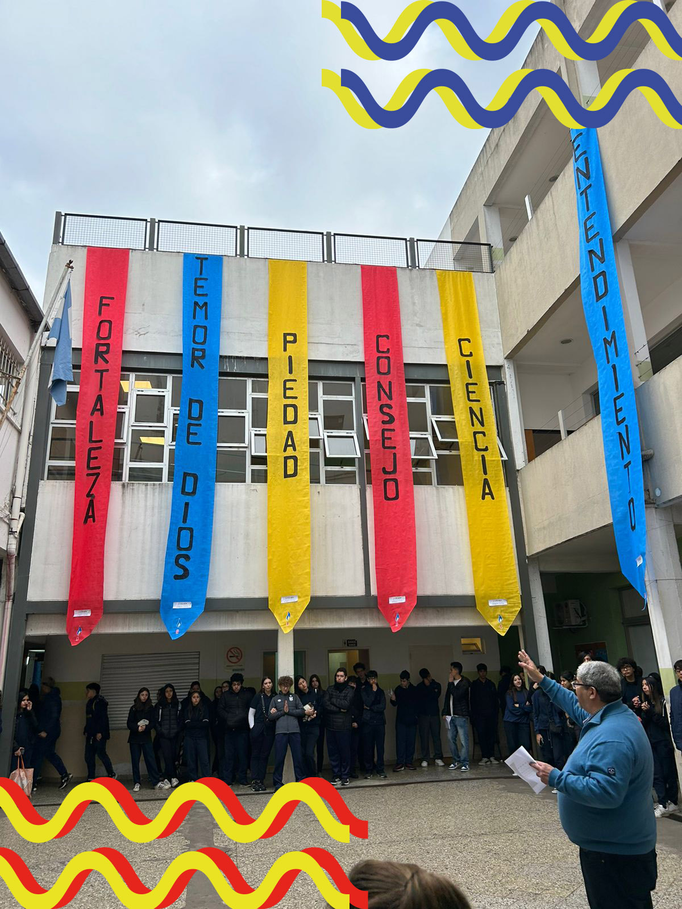
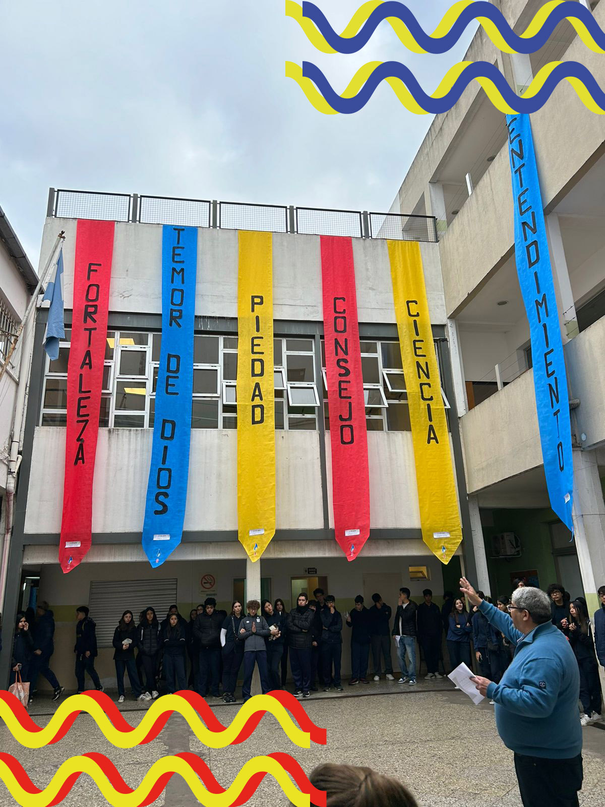

El día viernes 31 de mayo se celebraron en el Espíritu Santo las fiestas patronales con todo el colegio participando en ellas, hubieron diferentes actividades para realizar distribuidas en todo el colegio y 6 grupos, y gracias a alumnos de 5to y algunos de 4to todos llegaron a cada una de las estaciones. Las actividades que eran llamadas estaciones significaban un don. Hubieron muchas actividades muy divertidas para todos los que participamos, como son 6 dones habían 6 estaciones, estas fueron:
 
